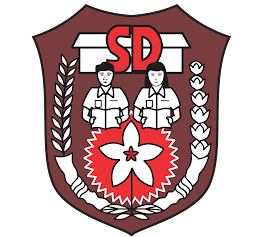

Riwayat Pendidikan

Sekolah Dasar
Saya sekolah di SDN 1 Petunjungan, Kecamatan Paiton, Kabupaten Probolinggo

Madrasah Tsanawiyah
Saya sekolah di MTS Mambaul Ulum Sukodadi, Kecamatan Paiton, Kabupaten Probolinggo

Sekolah Menengah Atas
Saya sekolah di SMA NEGERI 1 Paiton, Kecamatan Paiton, Kabupaten Probolinggo
Soft-skill
Komunikasi Efektif
Komunikasi Efektif merupakan Kemampuan untuk menyampaikan ide, pikiran, dan perasaan dengan jelas dan mudah dipahami oleh orang lain. Komunikasi yang baik juga melibatkan mendengarkan dengan perhatian sehingga terjadi saling pengertian.
Kerjasama Tim
Kerjasama Tim merupakan Kemampuan bekerja sama dengan orang lain untuk mencapai tujuan bersama. Ini termasuk saling membantu, menghormati perbedaan, dan berbagi tugas secara adil agar hasilnya optimal.
Manajemen Waktu
Manajemen waktu merupakan Kemampuan mengatur waktu dengan baik agar semua tugas dan kegiatan dapat diselesaikan tepat waktu. Dengan manajemen waktu yang baik, seseorang menjadi lebih produktif dan tidak mudah stres.
Hubungi Kontak Sayaa
083175741281